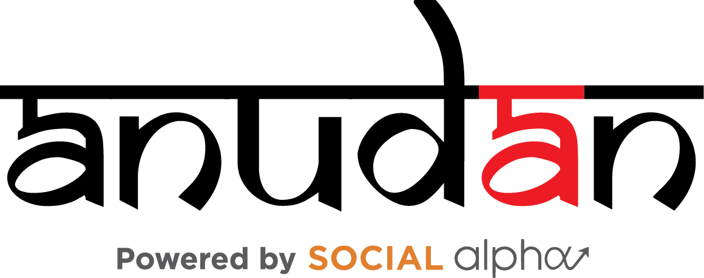

Anudan Grant Management System
Overview
Anudan is a simple web based tool that manages the grant lifecycle from grant letter issual, grant documentation, enabling disbursement decisions, recording disbursements, evaluating and monitoring of program progress via online reporting, all the way to grant closure.
Demo
Available at https://demo.anudan.org
For a peek into Anudan, please write to vineet@socialapha.org with your organization's name, primary contact person's name and phone number, number of users and their email addresses. Instructions on demo access and guidelines of use will be shared separately.
License
Technology Stack and Architecture
Setting up Anudan
Key Components